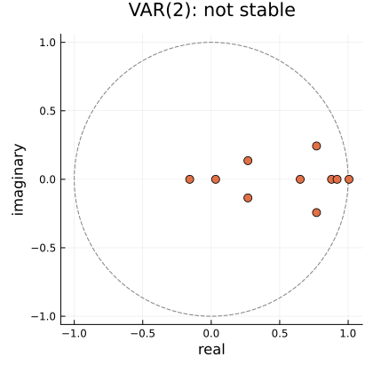
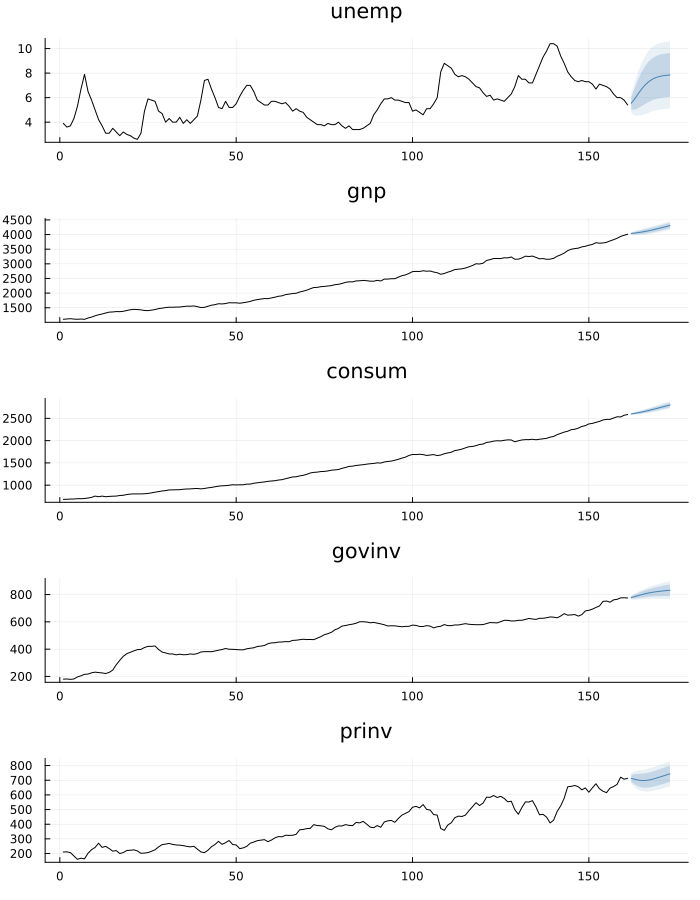
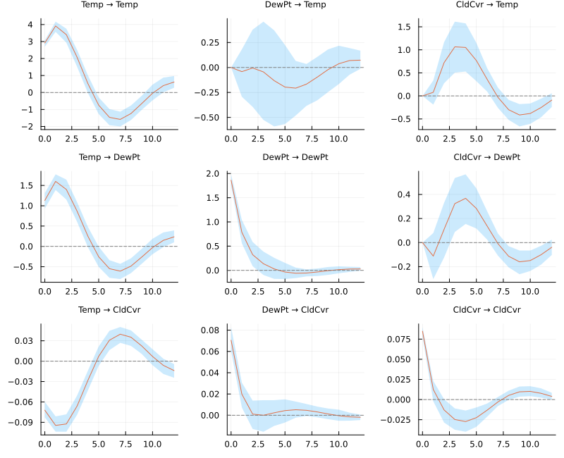
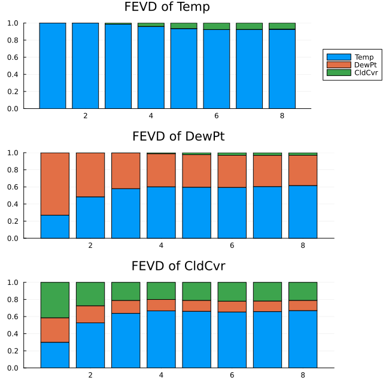
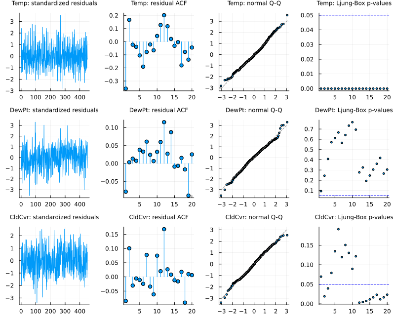

Vector Autoregression
Everything up to here has modelled one series at a time. A vector autoregression models several together, letting each one depend on the recent past of all of them:
\[y_t = \nu + A_1 y_{t-1} + \dots + A_p y_{t-p} + u_t\]
where y_t is a K-vector and each A_j is a K × K matrix. That is the whole model. Its usefulness is that it gives you somewhere to ask the questions a univariate model cannot even phrase: does one series help predict another, and if one is shocked, what happens to the rest.
Fitting one
Y has rows = time and columns = variables — the orientation both reference implementations use, and what the bundled multivariate datasets carry. fit_var accepts anything tsmatrix understands, including the NamedTuple that dataset returns, so no unpacking is needed:
using TSAnalytics
using StatsAPI: coefnames, aic # not re-exported; StatsAPI owns the generics
m = fit_var(dataset("econ5"), 2)VAR(2) K=5 T=159 deterministic=:const
variables: unemp, gnp, consum, govinv, prinv
companion roots (moduli, max first): 1.006183, 0.919028, 0.878636, 0.806514, … NOT STABLE
logLik = -2451.9593 AIC = 17.344694 BIC = 18.406265Note the last line of that summary. On this data the fitted VAR(2) is not stable — its largest companion root is just over 1 — which is worth knowing before forecasting from it, and is the sort of thing that is easy to miss if the model does not say so.
The coefficients come back as A[j], a K × K matrix per lag, with a separate det_coef for the deterministic terms:
println("A[1] is ", size(m.A[1]), ", A[2] is ", size(m.A[2]))
println("deterministic block: ", size(m.det_coef))
println("coefnames: ", coefnames(m)[1:3], " … ", coefnames(m)[end])A[1] is (5, 5), A[2] is (5, 5)
deterministic block: (5, 1)
coefnames: [:unemp_l1, :gnp_l1, :consum_l1] … constNeither reference stores it that way — vars returns one flat K × (Kp + ndet) matrix with the deterministic terms last, statsmodels a transposed (ndet + Kp) × K with them first — and they were verified to agree with each other once reordered. Separating the two removes the ordering question from everything built on top. If you want the flat form, coef(m) gives it, in R's order.
Deterministic terms
println(fit_var(dataset("econ5"), 1; deterministic=:none).loglik)
println(fit_var(dataset("econ5"), 1; deterministic=:const).loglik)
println(fit_var(dataset("econ5"), 1; deterministic=:both).loglik)-2543.8672446298033
-2526.2608322565848
-2517.441353124624Five values are available, and they deliberately span both references' vocabularies, which are mutually incomplete:
deterministic | terms | R type= | statsmodels trend= |
|---|---|---|---|
:none | — | "none" | "n" |
:const | 1 | "const" | "c" |
:trend | t | "trend" | no equivalent |
:both | 1, t | "both" | "ct" |
:quadratic | 1, t, t² | no equivalent | "ctt" |
R's type="trend" means a trend with no constant, while statsmodels' trend="ct" means constant and trend. They sound equivalent and are not: on the bundled fixture they differ by 6.15 in log-likelihood, and the mismatch propagates into order selection. That is why the keyword here is spelled like neither of them.
Choosing the order
s = var_select(dataset("econ5"); lag_max=6)VAR lag-order selection (T=155 held fixed, deterministic=:const)
lag AIC BIC HQIC FPE
1 17.714289 18.303339 17.953548 4.935167943088759e7
2 17.318125 18.39805 17.756766 3.324183786900606e7
3 17.358228 18.929028 17.996251 3.468846706719036e7
4 17.310078 19.371753 18.147484 3.321327369158576e7
5 16.904899 19.457449 17.941687 2.231796577268782e7
6 17.013189 20.056614 18.24936 2.515366835181756e7
selected: AIC 5 BIC 1 HQIC 2 FPE 5Four criteria, and they disagree — which is normal, not a problem. AIC and FPE pick the longest lag they are offered here, BIC the shortest.
The sample is held fixed, and that is the whole subtlety
Every candidate order is estimated on the same T = n - lag_max observations, so the criteria are comparable with one another. A single fitted model uses all n - p observations available to it, which is more. Both numbers are correct and both references report both:
println("var_select, lag 2 : ", round(s.aic[2], digits=10), " (T = ", s.T, ")")
m2 = fit_var(dataset("econ5"), 2)
println("aic(fit_var(…, 2)): ", round(aic(m2), digits=10), " (T = ", m2.T, ")")var_select, lag 2 : 17.3181247928 (T = 155)
aic(fit_var(…, 2)): 17.3446938647 (T = 159)If you want the selection figure for one order, slice the data yourself — fit_var(Y[lag_max - p + 1:end, :], p) reproduces it exactly.
Stability
m1 = fit_var(dataset("econ5"), 1)
println("roots : ", round.(roots(m1)[1:3], digits=6))
println("is_stable : ", is_stable(m1))roots : [1.005627, 0.966417, 0.883875]
is_stable : falseroots_plot shows the companion eigenvalues against the unit circle — the VAR(2) on the same data has one just outside it:
using Plots
plot(roots_plot(m2); size = (420, 420))
This is the one convention in this chapter most likely to cause real harm, because getting it wrong silently inverts a stability test.
vars::roots() returns the moduli of the companion-matrix eigenvalues: stable if all < 1. statsmodels' .roots returns the roots of the characteristic polynomial: stable if all |·| > 1. They are exact reciprocals, verified on five fixtures to between 1.1e-16 and 9.3e-15.
roots follows R, because "the largest root is 0.97, close to the boundary" is the reading practitioners expect. For statsmodels' convention take 1 ./ roots(m).
Forecasting
f = forecast(m2, 4)
println("point is ", size(f.point), ", bands are ", size(f.lower))
println("unemp: ", round.(f.point[:, 1], digits=4))point is (4, 5), bands are (4, 5, 2)
unemp: [5.5406, 5.9041, 6.3234, 6.7165]plot draws a VARForecast as one fan chart per variable:
plot(forecast(m2, 12); history = dataset("econ5"), size = (700, 900))
A VAR forecast is horizon × K points with horizon × K × levels bands, so it returns a VARForecast rather than the univariate Forecast nine other model families use. Generalising that type would have been a breaking change to all of them.
The intervals come from the df-adjusted Σ accumulated through the moving-average representation, and — as in both references — they treat the estimated coefficients as known, so they are slightly too narrow. The same honesty applies as to fit_ets's sigma2.
Granger causality
Does one variable help predict another, beyond what the other's own past already says? That is a question about predictive content, not about mechanism, and the name has misled people for fifty years.
t = granger_test(m2; cause = :gnp)Granger causality test -- system (VAR Wald/F)
H0: gnp do not Granger-cause unemp consum govinv prinv
F = 3.066974 df = (8, 740) p = 0.0020925493
chi2 = 24.53579 p = 0.0018624307 lags = 2 T = 159caused defaults to every variable not named in cause, and both can be blocks.
There are two different tests, and you should pick deliberately
Y = tsmatrix(dataset("econ5"))
sys = granger_test(fit_var(Y, 2); cause = 2) # the system test
pair = granger_test(Y[:, 1], Y[:, 2]; lags = 2) # the pairwise test
println("system F = ", round(statistic(sys), digits=6), " df2 = ", sys.df2)
println("pairwise F = ", round(statistic(pair), digits=6), " df2 = ", pair.df2)system F = 3.066974 df2 = 740
pairwise F = 11.140578 df2 = 154granger_test(m::VARModel; cause, caused)is the VAR-based Wald/F test —vars::causalityandstatsmodels'test_causality. Itsdf2is the system residual degrees of freedom,K·T − K·(Kp+ndet).granger_test(y, x; lags)is the single-equation F test —lmtest::grangertestandstatsmodels'grangercausalitytests. Itsdf2is one equation's,T − 2·lags − 1.
The F statistics coincide only when the caused set has one member, which for the default caused means K = 2. The p-values never coincide, because df2 differs by a factor of K. On the bivariate fixture at p = 2 the same F of 0.730864 gives 0.4821580341 from the system test and 0.4828206979 from the pairwise one.
Instantaneous causality
Granger causality is about the lags. Contemporaneous correlation in the residuals is a separate question:
instantaneous_causality(m2; cause = :gnp)Instantaneous causality test
H0: no instantaneous causality between gnp and unemp consum govinv prinv
chi2 = 70.438734 df = 4 p = 1.83385e-14 T = 159This is not a directional statement — contemporaneous correlation is symmetric, so swapping the two sets returns the identical statistic.
Impulse responses
An impulse response answers the question a VAR exists for: if one variable is shocked today, what happens to every variable over the following periods. irf returns them at horizons 0 … h, every matrix laid out [response, impulse]:
D = dataset("climhyd")
W = (Temp = D.Temp, DewPt = D.DewPt, CldCvr = D.CldCvr)
mw = fit_var(W, 2)
r = irf(mw, 8)
round.(r.orth[2]; digits = 3) # one period after the shock3×3 Matrix{Float64}:
3.918 -0.042 0.078
1.6 0.785 -0.112
-0.095 0.02 0.013plot(r) draws the whole response × impulse grid:
plot(irf(mw, 12; boot = true, runs = 200); size = (800, 650))
The ordering is an assumption, not a formatting choice
The orthogonalized responses — the ones with a "one standard deviation shock" reading — come from the Cholesky factor of the residual covariance. That factor makes the first variable respond within the period only to its own shock, the second to the first two, and so on. Reorder the columns and every orthogonalized response changes:
rp = irf(fit_var((CldCvr = D.CldCvr, DewPt = D.DewPt, Temp = D.Temp), 2), 8)
println("Temp's impact response to its own shock, Temp first: ",
round(r.orth[1][1, 1]; digits = 4))
println("the same, with Temp last: ",
round(rp.orth[1][3, 3]; digits = 4))Temp's impact response to its own shock, Temp first: 2.9188
the same, with Temp last: 1.6294The non-orthogonalized responses (r.nonorth) are merely relabelled by a reordering. Both references leave the user to know this; the result here records the order it used in r.names and prints it.
Uncertainty
irf(m, h; stderr = true) attaches analytic asymptotic standard errors (Lütkepohl 2005, §3.7). vars has none at all, so statsmodels was the only software reference; the formulas were also checked against a numerical Jacobian and against a parametric bootstrap of the sampling distribution, because the orthogonalized one is stated incorrectly in the textbook and statsmodels' own source says so.
irf(m, h; boot = true, runs = 1000, rng = …) attaches residual-bootstrap percentile bands — vars' scheme. One generator per replication makes a seeded run reproducible and the threaded result identical to the serial one. Expect the bands to be a little narrow in short samples: on a known bivariate VAR with n = 200 a nominal 95% band covered the truth about 92–93% of the time, the small-sample bias Kilian (1998) documented for this interval. vars makes no correction either.
cumulative = true gives running sums, which converge to lr_effects — and that refuses an unstable VAR, because the sum does not converge. Both references invert I - Σ A_j regardless. econ5's VAR(2), with its largest root just above 1, is a real example:
try
lr_effects(m)
catch err
println(sprint(showerror, err)[1:120], " …")
endArgumentError: lr_effects: the VAR is not stable (largest companion root 1.006183 >= 1), so the cumulative response does …Forecast error variance decomposition
fevd splits each variable's h-step forecast error variance by orthogonalized shock. It inherits the ordering dependence, and its horizons start at 1 where the impulse response's start at 0 — a one-step forecast already has error. The two objects do not share an axis, and nothing aligns them silently.
f = fevd(mw, 8)
round.(f.decomp[:, 8, :]; digits = 3) # [variable, shock] at the 8-step horizon3×3 Matrix{Float64}:
0.926 0.003 0.071
0.616 0.353 0.03
0.67 0.12 0.21plot(f; size = (650, 650))
Both IRFResult and FEVDResult have plot recipes: plot(r) draws the response × impulse grid with any bootstrap band shaded, plot(f) the stacked shares.
Structural VARs
The Cholesky ordering in irf is one identification scheme among many. A structural VAR states the scheme explicitly, as restrictions on A u_t = B ε_t, with missing marking what to estimate:
s = fit_svar(mw; A = [1.0 0.0 0.0; missing 1.0 0.0; missing missing 1.0],
B = [missing 0.0 0.0; 0.0 missing 0.0; 0.0 0.0 missing])Structural VAR, AB-model K=3 T=452
variables: Temp, DewPt, CldCvr
free parameters: 6 of 6 (just-identified)
A =
1.0 0.0 0.0
-0.387714 1.0 0.0
0.039405 -0.037861 1.0
B =
2.918783 0.0 0.0
0.0 1.861884 0.0
0.0 0.0 0.0848
converged in 7 iterations (:scoring)That one is recursive and just-identified — six free parameters for the six distinct elements of Σ — so it reproduces the Cholesky responses exactly. Fewer free parameters over-identify the model, and fit_svar tests the extra restrictions; more are refused before any optimization, because the data cannot separate them.
blanchard_quah identifies through the long run instead: the last shock has no permanent effect on the first variable, and so on.
round.(blanchard_quah(mw).lrim; digits = 3)3×3 Matrix{Float64}:
9.233 0.0 0.0
3.453 3.347 0.0
-0.239 0.072 0.114Structural impulse responses and variance decompositions are irf(s, h) and fevd(s, h) — the same recursion, with the structural impact matrix in place of the Cholesky factor.
A just-identified scheme fits the data exactly as well as any other — the likelihood is the same. Which restrictions are right is economics, not statistics; only the over-identifying ones are testable.
Checking a fitted VAR
The first question to ask of a fitted VAR is whether what it left behind looks like white noise. var_diagnostics runs the standard set in one call:
d = var_diagnostics(mw)
d.portmanteauPortmanteau test (adjusted, Hosking)
lags : 10
K, T : 3, 452
statistic : 193.5811 (df = 72)
p-value : 4.42035e-13portmanteau_test— Hosking's multivariate portmanteau, the vector analogue of Ljung-Box. It needslags > p: withlags ≤ pits degrees of freedom are not positive.varsruns anyway and reportsdf ≤ 0; this package refuses. Its power depends on the lag choice, so report the lag with the result.bg_testandes_test— the Breusch-Godfrey LM test and its Edgerton-Shukur small-sample F form. Prefer the F form in short samples.normality_test— multivariate Jarque-Bera, with its skewness and kurtosis halves (they sum to the joint statistic) and, on request, one test per equation, which is how you find which equation fails.arch_lm_test(m; lags)— multivariate ARCH-LM. Its degrees of freedom grow asK⁴, so it runs out of observations quickly at largerK; an infeasible auxiliary regression is refused by name.
d.normalityMultivariate Jarque-Bera normality test (Cholesky-standardized residuals)
joint : 27.4083 (df = 6) p = 0.0001213976
skewness : 20.8716 (df = 3) p = 0.0001119394
kurtosis : 6.5367 (df = 3) p = 0.0882265261
CldCvr JB = 1.6394 p = 0.4405553335
DewPt JB = 5.7951 p = 0.0551575172
Temp JB = 7.4943 p = 0.0235849752The picture to read beside the tests is diagnostic_plot(m): each equation's residuals, and their autocorrelations against the white-noise band.
plot(diagnostic_plot(mw); size = (800, 650))
The p-values are this package's own upper tails. vars computes every diagnostic p-value as 1 − CDF, which reports 0 for any strong rejection — the same defect as its Granger test, below.
Two places where the references are wrong
Both are worth knowing because a test written against the reference would fail where this package is right.
vars reports p = 0 for any moderately strong rejection
vars::causality computes its p-values as 1 - pf(...) and 1 - pchisq(...) rather than taking the upper tail, so they underflow to exactly zero in ordinary use. On climhyd an F of 13.36 on (10, 2634) degrees of freedom:
C = fit_var(dataset("climhyd"), 2)
g = granger_test(C; cause = :Temp)
println("F = ", round(statistic(g), digits=6), " df = (", g.df1, ", ", g.df2, ")")
println("this package : p = ", round(pvalue(g), sigdigits=6))
println("1 - CDF form : p = ", 1 - TSAnalytics._f_cdf(statistic(g), g.df1, g.df2))F = 13.359738 df = (10, 2634)
this package : p = 3.66448e-23
1 - CDF form : p = 0.0The second line is what vars prints. statsmodels calls a survival function and gets it right, so this is a defect rather than a convention — and it is why this package's p-values are not comparable with vars in the tail.
statsmodels cannot test instantaneous causality between two blocks
Its test_inst_causality raises IndexError whenever both the causing and the caused set have more than one member, because it indexes a mask with two fancy index arrays that only broadcast when one has length 1. Verified failing at (2,4), (3,3) and (4,2) on K = 6, and working at (1, K−1) and (K−1, 1). It always errors rather than returning a wrong answer.
So for a general block vars is the only reference, and this package agrees with it there:
instantaneous_causality(C; cause = [:Temp, :DewPt, :CldCvr])Instantaneous causality test
H0: no instantaneous causality between Temp DewPt CldCvr and WndSpd Precip Inflow
chi2 = 173.881015 df = 9 p = 9.582590000000001e-33 T = 452What is not here yet
- Cointegration testing and the VECM have their own chapter, Cointegration.
- Sign-restricted and proxy SVARs, and bands for structural impulse responses. Neither reference ships the first two.
- Sims-Zha error bands, generalized (Pesaran-Shin) impulse responses and bias-corrected bootstrap bands.
statsmodelshas the first and neither reference the other two; each is a separate piece of work. - Exogenous regressors, restricted VARs and Bayesian priors. The regressor construction would carry exogenous columns untouched, so it is a clean later addition rather than a rewrite.
K = 1. Refused by name, as both references refuse it; a single series is better served byarxorfit_arima.
See also
- Forecasting and Accuracy — evaluating what comes out of
forecast - Coming from R or Python — every documented divergence in one place
- API: Multivariate